Tutorial
This tutorial walks through a phyddle analysis for a binary-state
speciation-extinction model (BiSSE) using an R-based simulator. It assumes
that you have access to the ./workspace example projects bundled
with the phyddle repository.
This tutorial explains how to:
Understand and modify the Configuration files,
config.pyUnderstand and modify the Simulate script,
sim_bisse.RRun a phyddle analysis to Train a neural network
Make a new Estimate with a trained network
Interpret results from Plot
An analysis, now!
You need a result and you need it now!
This project will use R, ape, and castor to simulate training
datasets. Make sure they are installed:
# install R packages
Rscript -e 'install.packages(c("ape", "castor"), repos="https://cloud.r-project.org")'
Then, to run a phyddle analysis for bisse_r using 25000
training examples, type:
# enter bisse_r project directory
cd workspace/bisse_r
# run phyddle analysis
phyddle -c config.py --end_idx 25000
# analysis runs
# ...
# view results summary
open plot/out.summary.pdf
We did it! … but, what did we do!? We need to view the config file and simulation script to understand what analysis we ran and how to interpret the results.
Project setup
A phyddle project will generally need two key files to proceed: a Configuration file to specify how to run phyddle, and a script to Simulate training examples.
The directory ./workspace/bisse_r/ contains:
sim_bisse.R, a simulation script written in Rconfig.py, a phyddle config file designed to work withsim_bisse.R
Files and directories for results from phyddle pipeline steps will be generated automatically. See Workspace for more details regarding a typical project directory structure.
The simulation script
We begin with the simulation script because is the foundation of a phyddle analysis. The script defines the phylogenetic model that the neural network will learn to fit. Designing a simulator requires a basic understanding for how model parameters shape data patterns. It is important to test simulator behavior and output exhaustively before running phyddle analyses.
In this section, we examine how sim_bisse.R is designed to work
as a simulator for the config.py file and phyddle. Visit the
Simulate page for additional information on requirements.
The simulation script sim_bisse.R needs to accept four command-line
arguments: the output directory, the output filename prefix, the start
index for the batch of simulated replicates, and the number of simulated
replicates. For example, calling
Rscript sim_bisse.R ./simulate out 1000 100
expects that the script will generate simulated datasets 1000 through
1099, saving them to the directory ./simulate with the filename
prefix out.
First, in sim_bisse.R, we load any libraries we want to
use for our simulation.R
library(castor)
library(ape)
Next, we read in our command-line arguments:
args = commandArgs(trailingOnly = TRUE)
out_path = args[1]
out_prefix = args[2]
start_idx = as.numeric(args[3])
batch_size = as.numeric(args[4])
rep_idx = start_idx:(start_idx+batch_size-1)
num_rep = length(rep_idx)
After that, we create filenames for the output that phyddle expects:
# filesystem
tmp_fn = paste0(out_path, "/", out_prefix, ".", rep_idx) # sim path prefix
phy_fn = paste0(tmp_fn, ".tre") # newick file
dat_fn = paste0(tmp_fn, ".dat.csv") # csv of data
lbl_fn = paste0(tmp_fn, ".labels.csv") # csv of labels (e.g. params)
We then name the different model parameters and metrics we want to collect, either to estimate or to provide to the network as auxiliary data. It helps to write down what variables you want to record before writing the simulator so design the code to generate the desired output.
# label filenames
label_names = c("log10_birth_1", # numerical, estimated
"log10_birth_2", # numerical, estimated
"log10_death", # numerical, estimated
"log10_state_rate", # numerical, estimated
"log10_sample_frac", # numerical, known
"model_type", # categorical, estimated
"start_state") # categorical, estimated
The next step is optional. We tell the simulator the number of species
per tree the neural network expects, called the tree_width. Providing
phyddle with properly sized trees can speed up the Simulate and
Format step, when the simulator allows for downsampling (seen soon).
# set tree width
tree_width = 500
The main simulation loop then generates and saves one dataset per replicate index. Here is a simplified representation for a two-state SSE model for how the simulation loop works:
# simulate each replicate
for (i in 1:num_rep) {
# simulate until valid example
sim_valid = F
while (!sim_valid) {
# simulation conditions
# ...
# simulate model type
# ...
# simulate start state
# ...
# simulate model rates
# ...
# simulate BiSSE tree and data
# ...
# is simulated example valid?
# ...
}
# save tree
# ...
# save data
# ...
# save labels
# ...
}
# done !
Now we’ll look at each part of the simulation loop. First, we will define
the maximum clade size and time the simulator can run. This is the
stopping condition for a birth-death model. Note, we recorde the
sample_frac (rho parameter) to downsample large trees to fit within
tree_width. Later, during Format, we provide the value of
sample_frac as auxiliary data to the neural network for training.
# simulation conditions
max_taxa = runif(1, 10, 5000)
max_time = runif(1, 1, 100)
sample_frac = 1.0
if (max_taxa > tree_width) {
sample_frac = tree_width / max_taxa
}
Next, we simulate a start state for the BiSSE model:
# simulate model type
start_state = sample(1:2, size=1)
We also simulate a model type. Model type 0 will assume that the birth rates are equal for states 0 and 1. Model type 1 will assume that birth rates can differ between states 0 and 1.
# simulate start state
model_type = sample(0:1, size=1)
We then simulate the birth, death, and state transition rates. These values are both training labels and model parameters that we want to estimate.
# simulate model rates
if (model_type == 0) {
birth = rep(runif(1), 2)
} else if (model_type == 1) {
birth = runif(2)
}
death = max(birth) * rep(runif(1), 2)
Q = matrix(runif(1), nrow=2, ncol=2)
diag(Q) = -rep(Q[1,2], 2)
parameters = list(
birth_rates=birth,
death_rates=death,
transition_matrix_A=Q
)
We now have all model parameters and conditions, so we simulate a
phylogeny and dataset under the BiSSE model using the R package castor:
# simulate BiSSE tree and data
res_sim = simulate_dsse(
Nstates=num_states,
parameters=parameters,
start_state=start_state,
sampling_fractions=sample_frac,
max_extant_tips=max_taxa,
max_time=max_time,
include_labels=T,
no_full_extinction=T)
Valid trees must have 10 or more taxa. Smaller trees are rejected and resampled.
# check if tree is valid
num_taxa = length(res_sim$tree$tip.label)
sim_valid = (num_taxa >= 10) # only consider trees size >= 10
Once we have valid dataset, we save the tree using the ape package:
# save tree
tree_sim = res_sim$tree
write.tree(tree_sim, file=phy_fn[i])
We also save the simulated character data to file in csv format:
# save data
state_sim = res_sim$tip_states - 1
df_state = data.frame(taxa=tree_sim$tip.label, data=state_sim)
write.csv(df_state, file=dat_fn[i], row.names=F, quote=F)
Lastly, we save the model parameters to file in csv format. This file is later parsed into “unknown” parameters to estimate vs. “known” parameters that become auxiliary data.
Note
We recommend transforming numerical labels as numerical variables
(i.e. negative-, positive- or zero-valued real numbers). Non-negative
valued labels, such as rate parameters, can be transformed into
unbounded values through a log transformation, log(x). Doubly bounded
labels, such as probabilities or proportions, can be transformed to
unbounded values using the logit transformation, log(x / (1 - x)).
# save learned labels (e.g. estimated data-generating parameters)
label_sim = c( birth[1], birth[2], death[1], Q[1,2], sample_frac, model_type, start_state-1)
label_sim[1:5] = log(label_sim[1:5], base=10)
names(label_sim) = label_names
df_label = data.frame(t(label_sim))
write.csv(df_label, file=lbl_fn[i], row.names=F, quote=F)
That completes the anatomy of the simulation script. This is a fairly simple simulation script for a specific model using a specific programming language and code base (e.g. R packages). The general logic is the same for other models and simulators. Explore the workspace projects bundled with phyddle to understand how to write simulators for other models and programming languages.
The config file
Let’s inspect important settings defined in config.py, one block at
a time. You can view the contents of config.py here:
https://github.com/mlandis/phyddle/blob/main/workspace/bisse_r/config.py.
Some settings are omitted for brevity. Visit the
Configuration page for a detailed description of the
config file.
First, let’s review the project organization settings:
#-------------------------------#
# Project organization #
#-------------------------------#
'step' : 'SFTEP', # Step(s) to run
'prefix' : 'out', # Prefix for output for all steps
'dir' : './', # Base directory for step output
The step setting runs all five pipeline steps by default (Simulate,
Format, Train, Estimate, Plot). The verbose setting instructs phyddle
to print useful analysis information to screen. The prefix setting
causes all saved results to use the filename prefix out.` The dir
setting specifies the base directory for step output subdirectories.
#-------------------------------#
# Multiprocessing #
#-------------------------------#
'use_parallel' : 'T', # Use CPU multiprocessing
'use_cuda' : 'T', # Use GPU parallelization w/ PyTorch
'num_proc' : -2, # Use all but 2 CPUs for multiprocessing
The use_parallel setting lets phyddle to use multiprocessing
for the Simulate, Format, Train, and Estimate steps. The num_proc
setting defines how many processors parallelization may use. The use_cuda
allows phyddle to use CUDA and GPU parallelization during the
Train and Estimate steps.
#-------------------------------#
# Simulate Step settings #
#-------------------------------#
'sim_command' : 'Rscript sim_bisse.R', # exact command string
'start_idx' : 0, # first sim. replicate index
'end_idx' : 1000, # last sim. replicate index
'sim_batch_size' : 10, # sim. replicate batch size
The sim_command setting specifies what command to run to simulate
a batch of datasets. Note, Simulate calls this script with
four arguments: the step’s output directory, the step’s output
filename prefix, the start index for the batch of simulated
replicates, and the number of simulated replicates. The start_idx
and end_idx are set to 0 and 1000, and sim_batch_size
is 10. Together, this means phyddle will simulate replicates
indexed 0 to 999 in batches of 10 replicates using the command stored
in sim_command. Because use_parallel was previously set to T
each batch of replicates will be simulated in parallel.
#-------------------------------#
# Format Step settings #
#-------------------------------#
'num_char' : 1, # number of evolutionary characters
'num_states' : 2, # number of states per character
'min_num_taxa' : 10, # min number of taxa for valid sim
'max_num_taxa' : 500, # max number of taxa for valid sim
'tree_width' : 500, # tree width category used to train network
'tree_encode' : 'extant', # use model with serial or extant tree
'brlen_encode' : 'height_brlen', # how to encode phylo brlen? height_only or height_brlen
'char_encode' : 'integer', # how to encode discrete states? one_hot or integer
'param_est' : { # model parameters to predict (labels)
'log10_birth_1' : 'num',
'log10_birth_2' : 'num',
'log10_death' : 'num',
'log10_state_rate' : 'num',
'model_type' : 'cat',
'start_state' : 'cat'
},
'param_data' : { # model parameters that are known (aux. data)
'sample_frac' : 'num'
},
'tensor_format' : 'hdf5', # save as compressed HDF5 or raw csv
'char_format' : 'csv',
This block of settings defines how Format will convert raw data
into tensor format. The num_char and num_states settings determine
how many evolutionary characters and (for discrete-valued characters)
how many states each character has. The min_num_taxa and max_num_taxa
define the minimum and maximum number of taxa trees must have to be
included in the formatted tensor. Trees outside this range are excluded
from the formatted tensor. The tree_width setting defines the maximum
number of taxa represented in the compact phylogenetic data tensor
format. Trees larger than tree_width are downsampled while trees
smaller than tree_width are padded with zeros to fill the tensor.
The tree_encode setting informs phyddle
that we have an extant-only tree, meaning we use the CDV+S format,
rather than CBLV+S format. The brlen_encode setting instructs
phyddle to encode one row of node height information from the standard CDV
format, plus two additional rows of branch length information
for internal and terminal branches. The char_encode setting causes
phyddle to use one row with integer representation for our binary character.
The param_est and param_data settings define how phyddle handles
different model variables. We identify four numerical training
targets in param_est and one numerical auxiliary data variable
with param_data. Any parameters that are not listed in
param_est or param_data are treated as unknown nuisance
parameters (i.e. part of the model, but not estimated or measured).
Setting tensor_format to hdf5 means formatted output will be
stored in a compressed HDF5 file. The char_format setting means
phyddle expects taxon character datasets are in csv format.
#-------------------------------#
# Train Step settings #
#-------------------------------#
'num_epochs' : 20, # number of training intervals (epochs)
'trn_batch_size' : 2048, # number of samples in each training batch
'loss_numerical' : 'mse', # loss function to use for numerical labels
'cpi_coverage' : 0.80, # coverage level for CPIs
'prop_test' : 0.05, # proportion of sims in test dataset
'prop_val' : 0.05, # proportion of sims in validation dataset
'prop_cal' : 0.20, # proportion of sims in CPI calibration dataset
These settings control how phyddle runs the Train step to train,
calibrate, and validate the neural network. The prop_test setting
determines what proportion of simulated examples are withheld from the
training dataset. Train shuffles the remaining 1.0 - prop_test
proportion of training examples, and sets aside prop_val of those
examples for a validation dataset. Validation data are used to identify
when the network becomes overtrained – i.e. network performance against
the validation dataset no longer increases or worsens. and prop_cal examples for
calibration.
The num_epochs setting indicates the Train step wil run for 20
training intervals, with training batches of size 2048, as specified
by trn_batch_size. The loss_numerical configuration sets mean-squared
error for the loss function on numerical point estimates.
determines how many training intervals are used. The cpi_coverage
value of 0.80 sets the coverage level for the calibrated
prediction intervals (CPIs). That is, 80% of CPIs under the training
dataset are expected to contain the true value of the target variable.
There are no important settings for Estimate or Plot to discuss for this beginning tutorial.
Validating the simulator
Before launching a full analysis, it is important to validate the simulator behaves as intended and is properly interfaced with phyddle.
Warning
Do not proceed with training a neural network in phyddle until the simulator has been validated.
phyddle can only check for the presence and general format of required files. phyddle does not, and cannot, verify that the simulation script is modeling the the biological system accurately.
To validate the interface, run a small batch of simulations and inspect the output. For example, to simulate 10 datasets starting at index 0, type:
Rscript sim_bisse.R ./simulate out 0 10
This command will simulate datasets 0 through 9, saving them to the
directory ./simulate with the filename prefix out. Inspect the
output to ensure most replicate datasets have the following files:
out.0.tre: a newick tree fileout.0.dat.csv: a csv file of character dataout.0.labels.csv: a csv file of model parameters
Some replicates may not have a complete fileset if the simulator if, for example, the simulator failed to simulate a tree with 2 or more taxa.
When phyddle fails to detect any valid examples from the script, it will suggest that you debug the simulation script. In this case, the simulation script was not properly writing labels files.
▪ Simulating raw data
Simulating: 100%|█████████████████████| 1/1 [00:01<00:00, 1.32s/it]
▪ Total counts of simulated files:
▪ 10 phylogeny files
▪ 10 data files
▪ 0 labels files
WARNING: ./simulate contains no valid simulations. Verify that simulation command:
Rscript sim_bisse.R ./simulate out 0 1
works as intended with the provided configuration.
Again, we stress that phyddle does not and cannot verify that the simulation script generates mathematically valid datasets under the specified phylogenetic model.
Users are responsible for validating that their simulation scripts behave properly. This form of validation generally requires some knowledge of the mathematical or statistical properties of the model. Showing that the model and the simulated data have matching expected values (means, variances, etc.) is a good strategy.
For example, a Brownian motion model can be validated by showing that the expected variance-covariance structure of traits among taxa reflects shared branch lengths and the diffusion rate. Simple birth-death models can be validated by showing the process generates the expected number of taxa for a given set of rates and process start time.
Using simulator that has published validation results can help establish whether the simulator works as intended. However, such results may be for a different version of the software and for only part of the model’s parameter space. When possible, it is still best to personally validate the simulator for the specific version and part of parameter space you will use with phyddle.
Making a trained network
Now that we understand how the simulation script and config file work, we can train a dataset.
# enter bisse_r project directory
cd workspace/bisse_r
# run phyddle analysis
phyddle -c config.py --end_idx 25000
# analysis runs
# ...
# view results summary
open plot/out.summary.pdf
Making new estimates
Once you have the trained network tarball, uncompress and unarchive the files
# uncompress the tarball
tar -xzf phyddle_bisse_r.tar.gz
Then, you can use the trained network make predictions against new datasets. First, Format your data, then Estimate with the trained network to make new predictions, and finally Plot the results.
# run Format, Estimate, and Plot
# ... don't process simulated data (if it exists)
phyddle -c config.py -s FEP --no_sim
# view results
open ./plot/out.summary.pdf
Plotted results
In this section, we look at some plots. The figures
named out.empirical_estimate_num_N.pdf show estimates for
empirical datasets, where N represents the Nth empirical
replicate. Point estimates and calibrated prediction intervals are shown for
each parameter.
{kind=link}
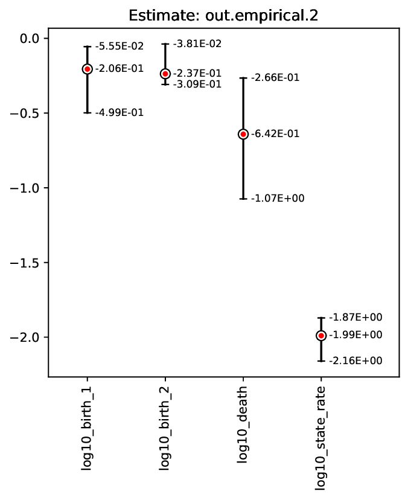
Categorical estimates for the Nth empirical datasets are shown in the
figure named out.empirical_estimate_cat_N.pdf. These figures are
simple bar plots reporting the probabilities across possible
categories per variable.
{kind=link}
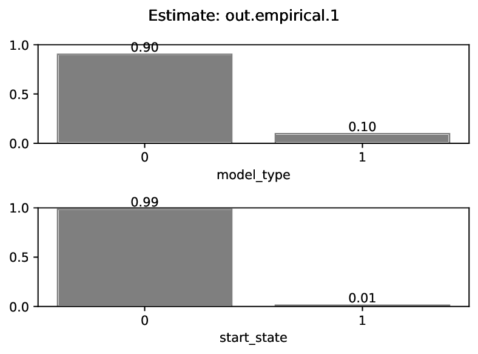
The figure out.train_density_labels_num.pdf shows the marginal
density for numerical training labels defined by param_est.
The red line corresponds to an empirical estimate to help determine
if it is an outlier with respect to the simulated labels.
{kind=link}
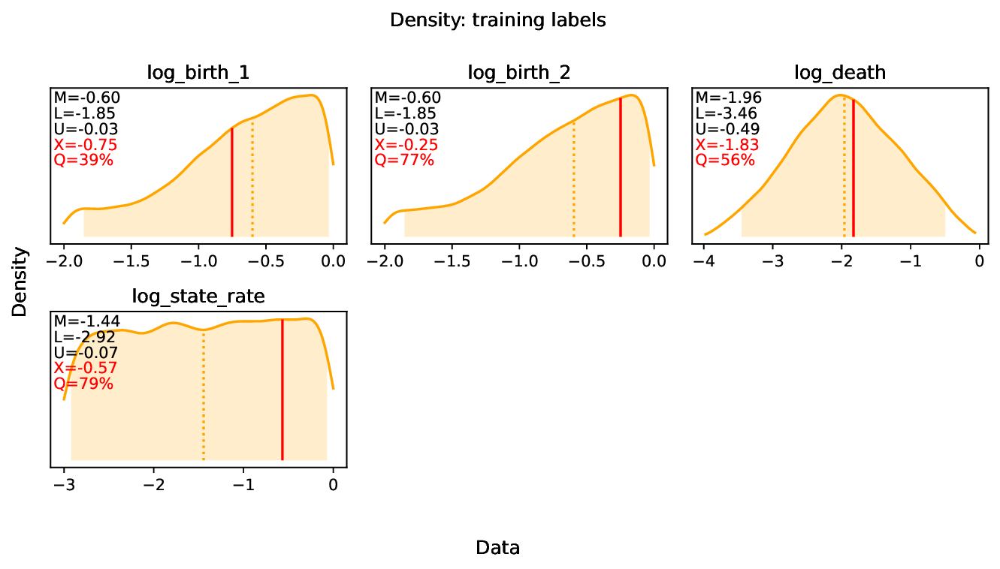
The figure out.train_pca_labels_num.pdf shows joint density of
the training labels as a PCA-transformed heatmap. The red dots correspond to
a subsample of the empirical estimates to determine if they are outliers.
{kind=link}
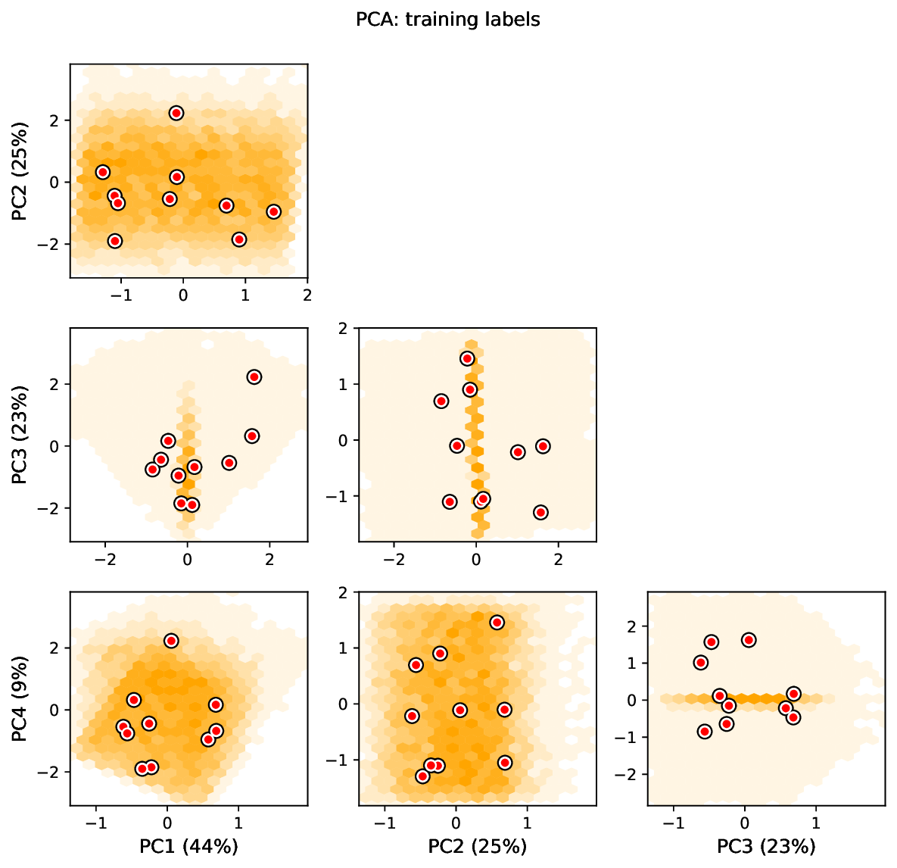
The figure out.train_density_aux_data.pdf shows the marginal
density for all summary statistics generated by Format, plus the
parameters defined by param_data. The red line corresponds to
the summary statistics for an empirical estimate to help determine
if it is an outlier with respect to the simulated labels.
{kind=link}
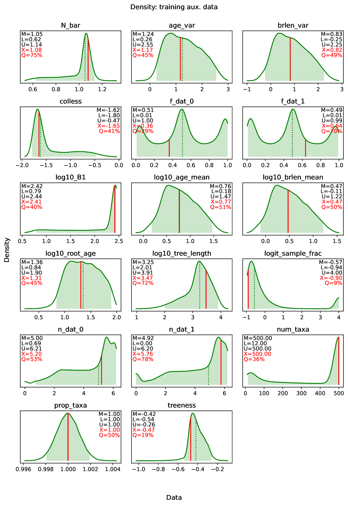
The figure out.train_pca_aux_data.pdf shows joint density of
the auxiliary data as a PCA-transformed heatmap. The red dots correspond to
a subsample of the empirical summary statistics to determine if they
are outliers.
{kind=link}
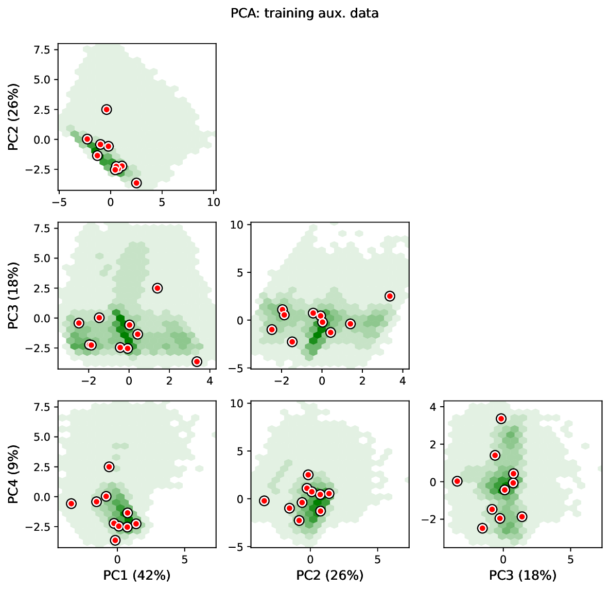
The figure out.train_estimate_log_birth_1.pdf shows trained
network predictions for the training dataset.
{kind=link}
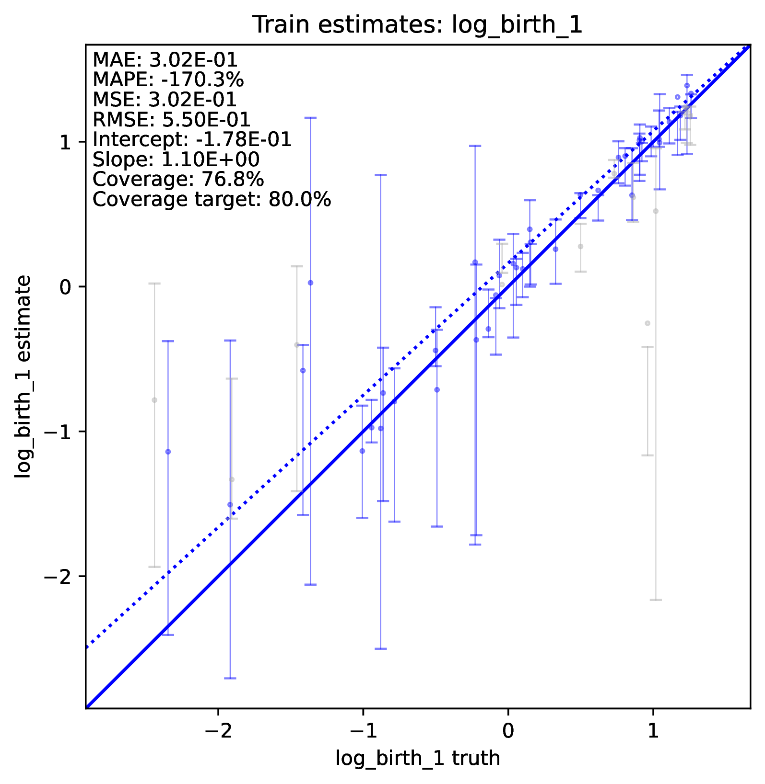
The figure out.test_estimate_log_birth_1.pdf shows trained
network predictions for the test dataset (the data not used for training).
{kind=link}
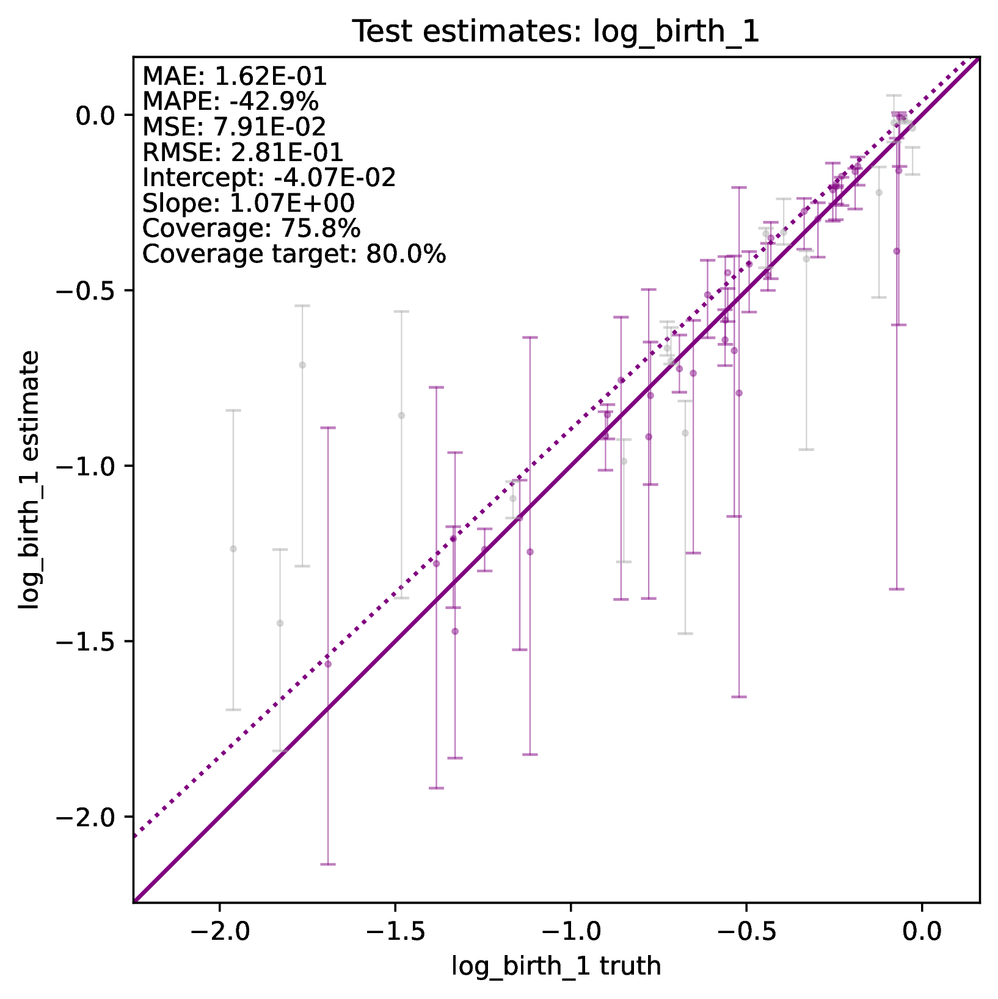
The figure out.train_estimate_model_type.png shows trained network
predictions for the model type variable in the training dataset.
{kind=link}
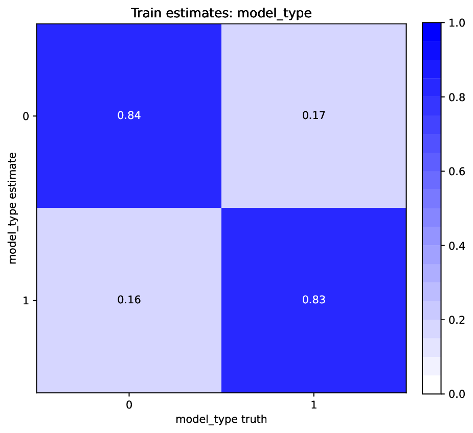
The figure out.test_estimate_model_type.png shows trained network
predictions for the model type variable in the test dataset.
{kind=link}
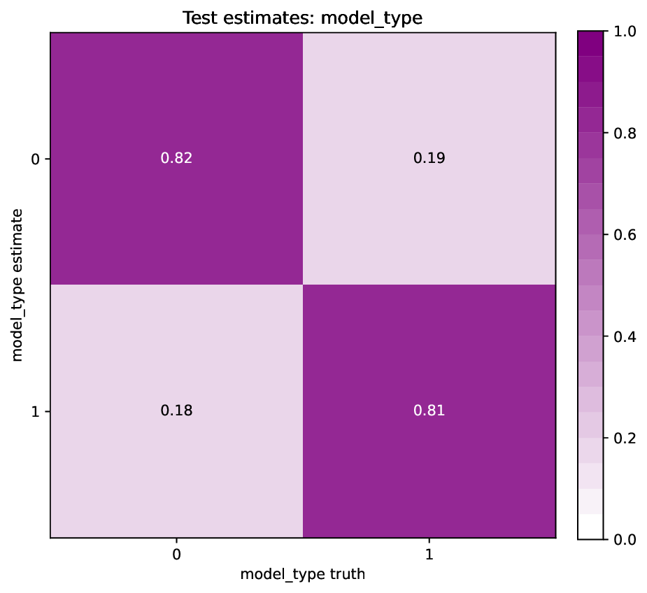
This figure out.network_architecture.pdf represents the network
architecture used for training.
{kind=link}
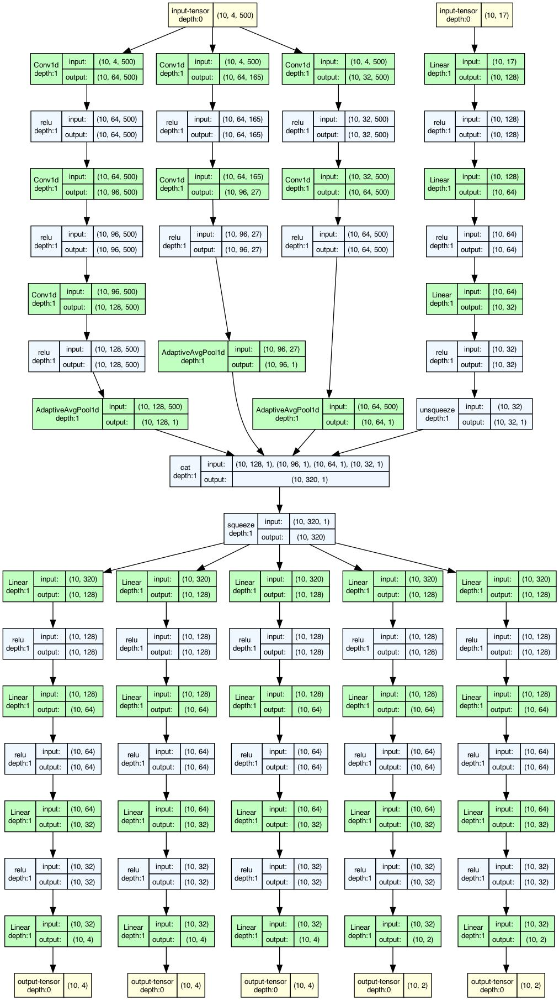
Exactly which figures are generated depends on how phyddle was configured.